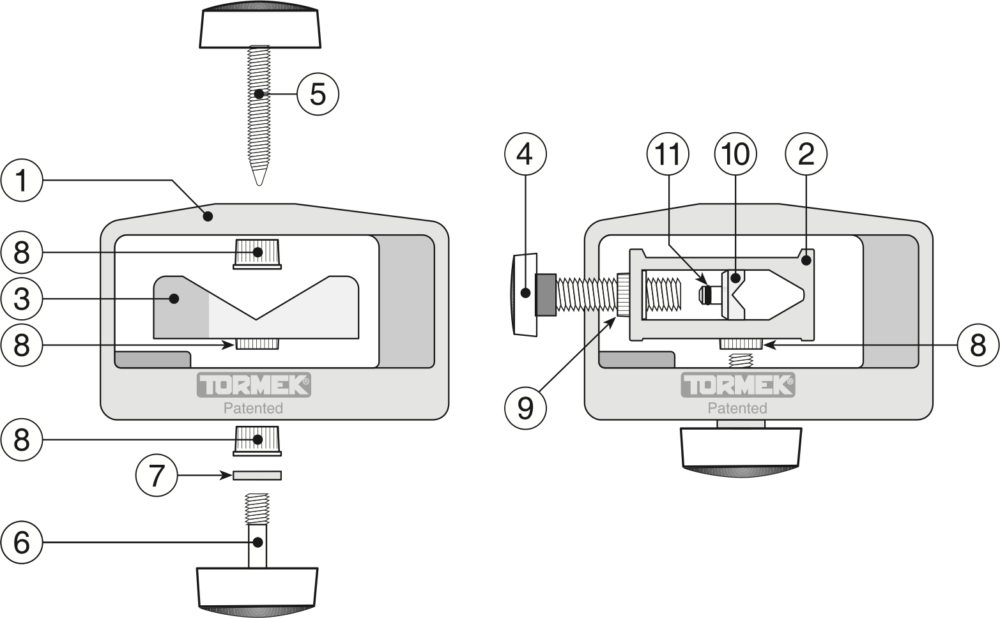

|
|
|
Time Saving Tips for the Tormek |
Use an Alignment Jig for the SE-77
Use a Setup Jig for the SE-77 with Standardized Angles
SVS-50 Multi-Jig MultipurposeGet Dedicated USBs for the Two TTS-100 Settings
Scrapers SkewsThese are ideas and techniques you can use to make using your Tormek faster and easier. These ideas are not free, but they are also not overly expensive.
You can click on any of the pictures to see a larger version.
Use this jig to align the SE-77 Square Edge Jig, ensuring that the skew angle is set to 0°.
You need to 3D print (or get a friend to 3D print) this part:
The noted link above also provides instructions on the usage of this alignment jig.
Setting everything up to use the SE-77 Square Edge Jig to sharpen a chisel or plane blade can be a bit onerous. Oftentimes, the Sharpie method ends up being used.
An alternate approach is to apply the same ideas as used in sharpening turning tools. The idea is to set the distance from the USB to the grinding stone using the B setting on the TTS-100 Turning Tool Setter, and then use calculated projections for the tool as held in the SE-77. This dramatically reduces the time required to start sharpening the tool
You need to 3D print (or get a friend to 3D print) this part:
Once you have the Projection Jig:

Open Seat |

Closed Seat |
|
|

SVS-50 Parts Breakdown (from the Tormek diagram) |
||
Switching the SVS-50 Multi-Jig between the Open Seat and the Closed Seat is painful: I spent more time trying to figure out how to get it setup correctly than I did using the jig.
The good news is that you can order a few parts and make this jig into two separate tools, eliminating the need to swap the seats within the housing. You need these parts:
Once you have these two parts, you can assemble both the open seat and the closed seat as if they were two separate jigs.
The full parts breakdown for the SVS-50 is available on the Tormek web site and shows these parts.
You can quickly get to sharpening, and then back to woodworking, by using dedicated Universal Support Bars (USBs).
For many woodturning tools, the TTS-100 Turning Tool Setter is used to set the distance between USB and the grinding wheel using either the A or B setting. If you have pre-set USBs ready to go, one set for the TTS-100’s A setting, and another for the B setting, then you can quickly get to sharpening, which gets you back to turning faster.
The parts needed are:
Once everything is in the correct position,
This is another technique which allows you to quickly get to sharpening, and then back to woodworking.
Dedicate a Universal Support Bar (USB) and SVD-110 Platform Jig to sharpening scrapers. This works exceptionally well for negative rake scrapers where the upper and lower angles are the same.
The parts needed are:
Once everything is in the correct position,
Now, when I want to sharpen a scraper, I grab the USB/Jig combo and drop it onto the Tormek. I sharpen the top side (if needed), and then the bottom. You need to sharpen the bottom last so that the burr will be left towards the top of the scraper.
If you want to sharpen skews with flat sides, this works well. It works especially well for the Alan Lacer type of skews as it is easy to keep the same edge angle on the curved part of the edge. And as above, it allows you to quickly get to sharpening, and then back to woodworking.
The parts needed are:
Once everything is in the correct position,
Now, when I want to sharpen a scraper, I grab the USB/Jig combo and drop it onto the Tormek. Everything is ready to use, so I get to sharpening.
Dedicate a Universal Support Bar (USB) and SVD-110 Platform Jig to sharpening skews. You can drop this onto the Tormek, sharpen the one side, and sharpen the other.
{kind=link}
{kind=link}
{kind=link}